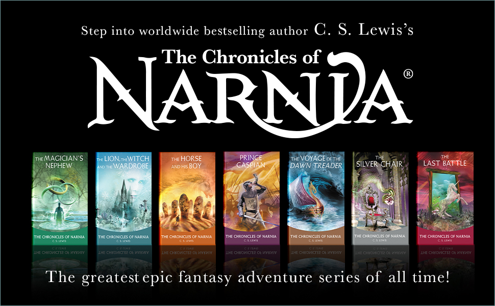
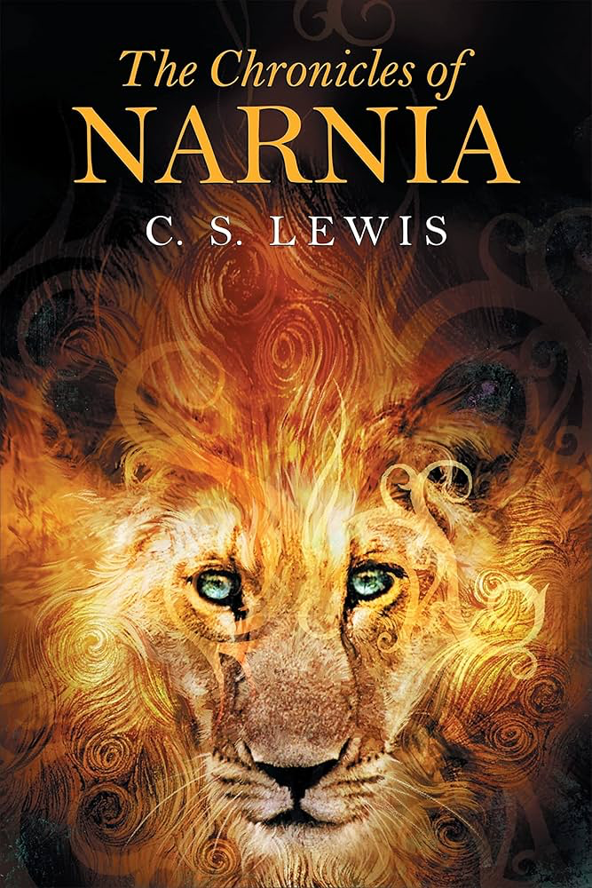
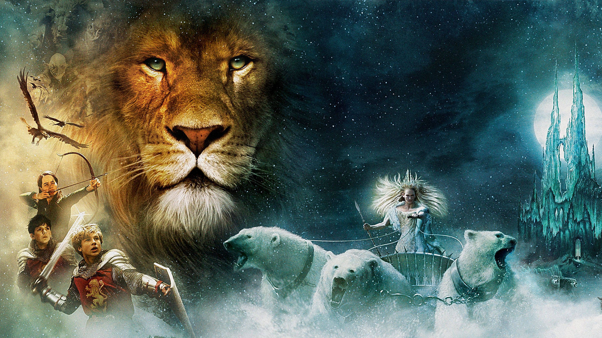
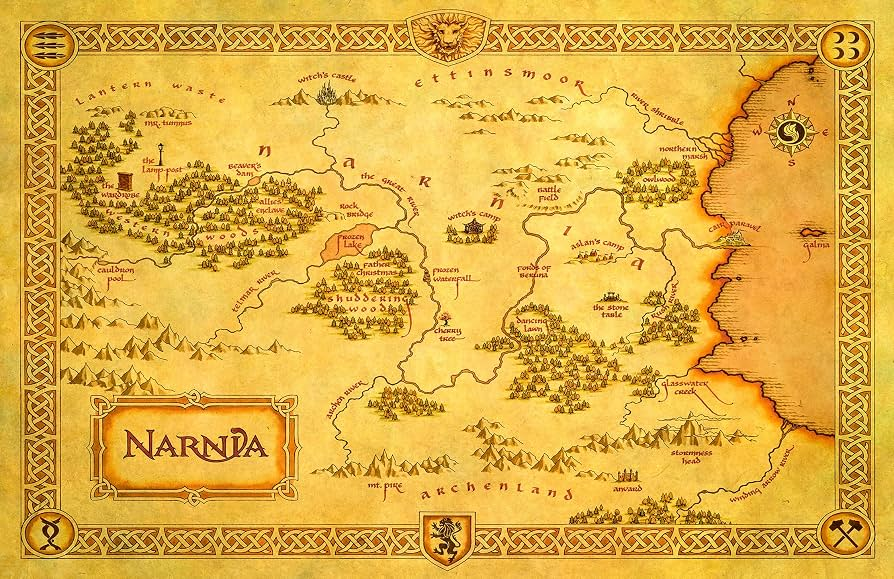

Author: Isaiah Johnn ⋄ 07/21/2026

The Chronicles of Narnia is a series of seven portal fantasy novels by British author C. S. Lewis. Illustrated by Pauline Baynes and originally published between 1950 and 1956, the series is set in the fictional realm of Narnia, a fantasy world of magic, mythical beasts, and talking animals.

It narrates the adventures of various children who play central roles in the unfolding history of the Narnian world. Except in The Horse and His Boy, the protagonists are all children from the real world who are magically transported to Narnia, where they are sometimes called upon by the lion Aslan (who appears in all seven books) to protect Narnia from evil. The books span the entire history of Narnia, from its creation in The Magician's Nephew to its eventual destruction in The Last Battle.

C.S. Lewis's life and literary influences deeply shaped The Chronicles of Narnia. His childhood experiences – moving to a large house in Belfast, losing his mother at an early age, and attending English boarding schools – paralleled events and settings in Narnia, such as Lucy discovering the magical world or the Pevensies attending school. Lewis also drew extensively on mythology, medieval literature, and cosmology. Works like the Old Irish immrama inspired The Voyage of the Dawn Treader; Michael Ward's Planet Narnia suggests that each Narnia book corresponds to a medieval planet with symbolic traits. Lewis's reading of Plato, George MacDonald, Dante, and John Milton influenced themes, character archetypes, and moral lessons in the series, with elements of Christian theology interwoven through characters like Aslan, though Lewis preferred the term "supposition" over "allegory".
